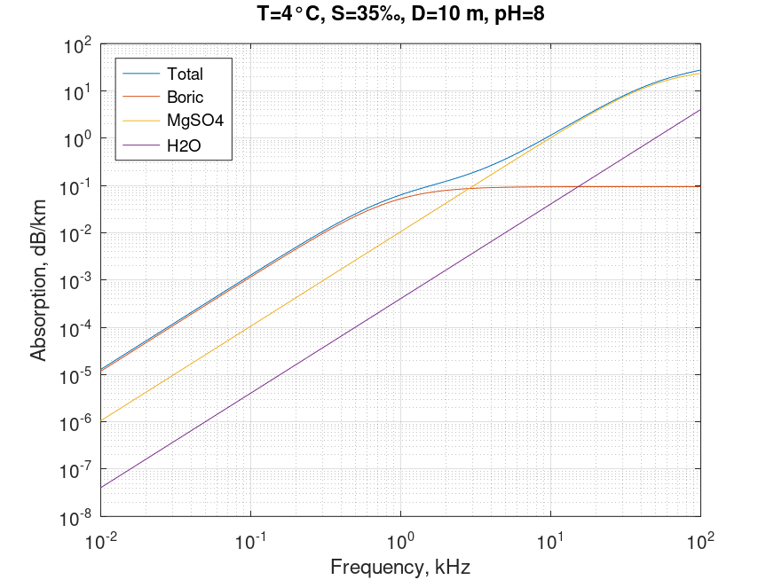

Sound absorption in sea. Francois & Garrison equation
Mathematical definition
$$\boxed{\alpha \left( {T,S,D,f,pH} \right) = \frac{{{A_1}{P_1}{f_1}{f^2}}}{{{f_1}^2 + {f^2}}} + \frac{{{A_2}{P_2}{f_2}{f^2}}}{{{f_2}^2 + {f^2}}} + {A_3}{P_3}{f^2}}$$
| Notation | Description | Units | Conversion | Limits for $f < 500 \; kHz$ | Limits for $f > 500 \; kHz$ |
|---|---|---|---|---|---|
| $\alpha$ | absorption | $dB/km$ | |||
| $T$ | temperature | $^{\circ}C$ | $-2 < T < 22$ | $0 < T < 30$ | |
| $S$ | salinity | $‰$ | $30 < S < 35$ | $0 < S < 40$ | |
| $D$ | depth | $m$ | $0 < D < 3500$ | $0 < D < 10000$ | |
| $f$ | frequency | $kHz$ | $10^{ - 2} < f$ | $f < {10^3}$ | |
| $pH$ | acidity |
$${A_1} = \left( {8.86/C} \right) \times {10^{0.78pH - 5}}$$
$${f_1} = 2.8\sqrt {S/35} \times {10^{\left( {4 - 1245/{T_K}} \right)}}$$
$${A_2} = 21.44\left( {S/C} \right)\left( {1 + 0.025T} \right)$$
$${P_2} = 1 - \left( {1.37 \times {{10}^{ - 4}}} \right)D + \left( {6.2 \times {{10}^{ - 9}}} \right){D^2}$$
$${f_2} = \frac{{8.17 \times {{10}^{\left( {8 - 1990/{T_K}} \right)}}}}{{1 + 0.0018\left( {S - 35} \right)}}$$
$${A_3} = \left\{ {\begin{array}{c} {\begin{array}{l} {\left( {4.937 \times {{10}^{ - 4}}} \right) - \left( {2.590 \times {{10}^{ - 5}}} \right)T}\\ { + \left( {9.11 \times {{10}^{ - 7}}} \right){T^2} - \left( {1.5 \times {{10}^{ - 8}}} \right){T^3}} \end{array}}&{T \le 20}\\ {\begin{array}{l} {\left( {3.964 \times {{10}^{ - 4}}} \right) - \left( {1.146 \times {{10}^{ - 5}}} \right)T}\\ { + \left( {1.45 \times {{10}^{ - 7}}} \right){T^2} - \left( {6.5 \times {{10}^{ - 10}}} \right){T^3}} \end{array}}&{T > 20} \end{array}} \right.$$
$${P_3} = 1 - \left( {3.83 \times {{10}^{ - 5}}} \right)D + \left( {4.9 \times {{10}^{ - 10}}} \right){D^2}$$
$$C = 1412 + 3.21T + 1.19S + 0.0167D$$
| Notation | Description | Units | Conversion | Limits |
|---|---|---|---|---|
| $T_{K}$ | temperature | $K$ | $=273.15+T$ | |
| $f_{1}$ | boric acid relaxation frequency | $kHz$ | ||
| $f_{2}$ | magnesium sulfate relaxation frequency | $kHz$ | ||
| $C$ | sound speed | $m/s$ | ||
| $\frac{{{A_1}{P_1}{f_1}{f^2}}}{{{f_1}^2 + {f^2}}}$ | boric acid contribution | $dB/km$ | ||
| $\frac{{{A_2}{P_2}{f_2}{f^2}}}{{{f_2}^2 + {f^2}}}$ | magnesium sulfate contribution | $dB/km$ | ||
| ${A_3}{P_3}{f^2}$ | pure water contribution | $dB/km$ |
Octave/Matlab implementation
function [alpha, Boric, MgSO4, H2O, C] = sound_absorption_sea_francois ...
(T,S,D,f,pH)
% Arguments
% T: temperature \ degree Celsius \
% -2 < T < 22 for 10 Hz < f < 500 kHz
% 0 < T < 30 for f > 500 kHz
% S: salinity \ ppt \
% 30 < S < 35 for 10 Hz < f < 500 kHz
% 0 < S < 40 for f > 500 kHz
% D: depth \ m \
% 0 < D < 3500 for 10 Hz < f < 500 kHz
% 0 < D < 10000 for f > 500 kHz
% f: frequency \ kHz
% pH: "potential of hydrogen"
% Results
% alpha: absorption of sound in seawater \ dB/km
T_kel = 273 + T;
% Sound speed
C = 1412 + 3.21*T + 1.19*S + 0.0167*D;
% Boric
A1 = (8.86./C).*10.^(0.78.*pH-5);
P1 = 1;
f1 = 2.8 * sqrt(S./35).*10.^(4-1245./T_kel);
Boric = (A1.*P1.*f1.*(f.^2))./((f.^2)+(f1.^2));
% MgSO4
A2 = 21.44*(S./C).*(1+0.025*T);
P2 = 1 - (1.37e-4)*D + (6.2e-9)*(D.^2);
f2 = (8.17*(10.^(8-1990./T_kel)))./(1+0.0018*(S-35));
MgSO4 = (A2.*P2.*f2.*(f.^2))./((f.^2) + (f2.^2));
% H2O
if T <= 20
A3 = (4.937e-4) - (2.590e-5)*T ...
+ (9.11e-7)*(T.^2) - (1.5e-8)*(T.^3);
else
A3 = (3.964e-4) - (1.146e-5)*T ...
+ (1.45e-7)*(T.^2) - (6.5e-10)*(T.^3);
end
P3 = 1 - (3.83e-5)*D + (4.9e-10)*(D.^2);
H2O = A3*P3*(f.^2);
% Total
alpha = Boric + MgSO4 + H2O;
end
Computational examples

References
- Francois, RE; Garrison, GR, "Sound absorption based on ocean measurements: Part I: Pure water and magnesium sulfate contributions", 1982
- Francois, RE; Garrison, GR, "Sound absorption based on ocean measurements. Part II: Boric acid contribution and equation for total absorption", 1982